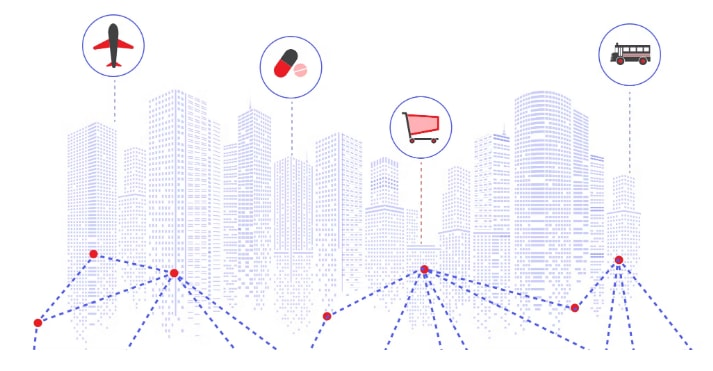
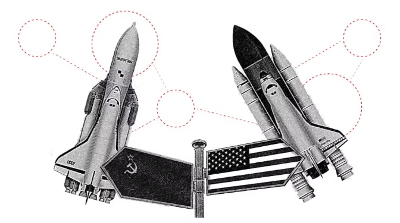
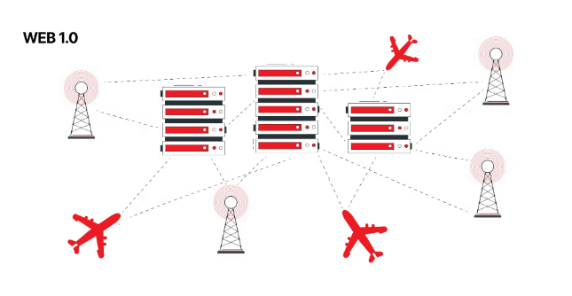
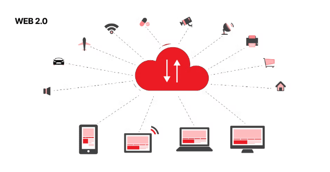
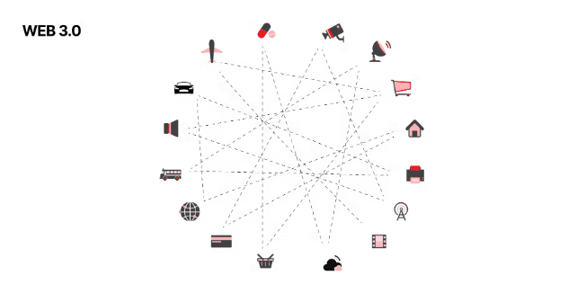
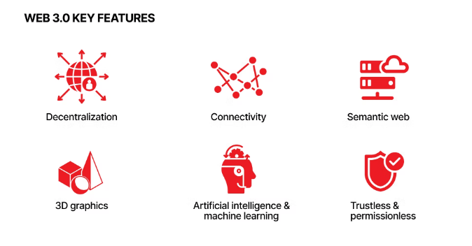

没有过去，就没有未来。要了解未来会发生什么，我们需要知道我们现在和以前拥有什么。因此，与其一下跳到web3.0的技术和示例上，我们需要了解 Web 1.0 的基本原理、Web 2.0 是什么，以及向 Web 3.0 的过渡给我们带来了什么？
要对 Web 1.0 有一个基本的了解，就必须了解它出现的原因。

那是 1950 年代，美国和苏联之间冷战的高潮。美国意识到冷战阶段随时可能变成热战阶段的可能性很高。因此，他们需要一个可靠的信息传输网络，在任何规模的破坏下都能保持正常运行。
为此，他们创建了一个名为国防高级研究计划局（简称 DARPA）的组织，约瑟夫·卡尔·罗伯内特·利克莱德 (Joseph Carl Robnett Licklider) 在那里工作，并为这种称为 ARPANET 的网络的发展奠定了基础，该网络成为了互联网的鼻祖。
值得注意的是，ARPANET 并不是第一个也不是唯一的一个计算机网络。事实上，类似的网络正在美国多所大学同时开发和推进技术解决方案。许多研究这些解决方案的科学家也被公认为互联网之父，当之无愧地在互联网名人堂中占据一席之地。
但是约瑟夫·卡尔·罗伯内特·利克莱德在他们当中也有一些特殊的地位，因为他可能比其他任何人都更清楚地意识到全球计算机网络的巨大潜力，并在他的银河网络概念中表达了这一点。这个概念反过来又联合了许多最有才华的科学家，并将他们最好的解决方案组合在一起，最终成为了 ARPANET。
尽管 ARPANET 不再仅仅用于军事目的，但它在其他用途方面的能力还有很多不足之处。因此，在改进 ARPANET 的过程中，科学家们创建了具有更高带宽的 NSFNet，以传输更多用于科学目的的数据。ARPANET 和 NSFNet 技术构成了未来 Internet 的基础并在很大程度上决定了其结构。
欧洲核子研究中心也是致力于互联网技术的科学中心之一，传奇人物蒂姆·伯纳斯-李曾在此工作。他创造了所有的技术，没有这些技术，我们今天无法想象如何使用互联网。他制作了 HTML、HTTP 协议、URL 和 URI，第一个称为 WorldWideWeb 的 Web 浏览器和网页编辑器，以及第一个网站，即 CERN。当然，这最初是一项在本地工作的专有技术。尽管如此，几年后，欧洲核子研究中心仍将这些技术开放并置于公共领域，让所有人都可以使用它们。就在那时，完整的 Web 1.0 诞生了。尽管 Web 1.0 很难吸引当今的 Internet 用户，但它在当时非常棒。
虽然，新技术一般比旧技术更好。但一切并不总是那么绝对，尽管我们可能不想生活在 Web 1.0 的时代，但与Web 2.0相比，它也有其优势。

权力下放 。如果您还记得该网络主要是为军事目的而创建的，那么其稳定性是一项基本要求。对此的最佳解决方案是使其分散化，以便对网络组件的任何程度的损坏都不会使网络停止运行。当然，由于主要威胁是对网络的物理损坏，因此软件保护方法并不像今天这样先进。然而，分散化使得尝试软件攻击和窃取数据变得更具挑战性。
标准化。由于科学家参与了该网络的开发，因此大多数决策都高度一致，并严格讨论了标准的采用。解决了短期问题但产生长期影响的方案是不被接受的。
只读。 Internet 页面是静态的，无法与之交互。您只能打开并阅读该页面。搜索不佳。没有关键字搜索算法。您只有一个可用页面列表，您可以打开并希望您想要或感兴趣的信息在那里。
速度慢。网速非常慢。甚至页面也会从上到下逐渐加载，而不是像现在这样完全显示。
Web 2.0 是我们现在生活的互联网时代的传统名称。具有社交网络的互联网，您可以在其中保存您的信息流，您可以在其中注册和发表评论的网站，或者您可以在家中订购食物和商品的应用程序。总而言之，它是一个互联网，用户可以在其中生成内容和共享数据，而不仅仅是浏览。
这在很大程度上要归功于Netscape Navigator网络浏览器在Web 1.0时代带来的技术。例如，使用 JavaScript 创建表单和交互式内容，使用 cookie 保存会话信息，以及其他一些。当然，这极大地扩展了交互的可能性。尽管如此，还有一个更根本的问题，即个人电脑还没有那么普及和高效，网络仍然很慢。
随着商业数据中心的出现，这种情况开始发生变化，这些数据中心可以外包大部分计算资源，并充分利用旨在使互联网互动的新技术。那是网络泡沫爆发的时候，在那之后，要么是那些以各种可能的方式摧毁竞争对手的人幸存下来，要么是那些提供了一些创新的人。正是他们在许多方面改变了互联网的原则，使我们今天所知道的 Web 2.0 具有其所有固有的优点和缺点。

内容生成。如前所述，我们已经从仅仅阅读到生成内容。互联网已成为许多人无限可能的来源。对于创业者来说，它已成为创造以前不可能的业务的创新平台。对于艺术家来说，它已成为一个非常强大的工具和一个新的无限平台来发布他们的作品。对于普通人来说，它已成为寻找无穷无尽的学习、工作、社交和其他方式来改善他们的生活或获得更多乐趣的地方。
云计算。数据中心拥有巨大的计算能力，不受最终用户设备的软件或硬件限制。这就是社交网络的兴起，它们从头开始构建解决方案，从而为用户提供最大的交互机会。此外，他们现在可以访问大量个人数据，他们可以处理这些数据以改进他们的服务。
社交网络。如前所述，社交媒体已成为各种用途的极受欢迎的平台。人们可以比以往更轻松地交流，企业家可以通过增加他们的在线活动并更接近潜在客户来赚更多的钱。许多企业不是从他们的网站开始，而是从社交媒体页面开始，因为它是一种非常先进、大部分免费且非常有效的方式来推广他们的产品和服务。
移动应用程序。尽管互联网技术进步异常迅速，但它落后于移动设备，移动设备变得越来越强大、有吸引力和可访问性。它催生了移动应用热潮，每家公司都想要他们的应用，无论他们是否需要它。不过，一开始，应用程序确实运行得更快，允许的功能更多，并可以部分或完全离线操作。毕竟，与服务器交换数据是为了实现应用程序的功能，而不是试图从其中获利，而订阅模式远没有一次性购买那么受欢迎。
去匿名化。我们现在所处的过渡时期已经失去了 Web 2.0 经典时期的一些基本优势。然而，它的一些问题存在于其核心，并成为一系列巨头公司滥用的原因。这种情况只会随着时间的推移而增长。其中一个缺点是非匿名化，匿名从一开始就更具吸引力，允许用户通过相同的社交网络公开分享他们生活中的时瞬间。但随着时间的推移，一些服务开始要求身份证明作为注册和在其平台上执行操作的条件之一。现在，由于收集和分析用户数据、其身份以及与之相关的一切都被默认为已被发现，因此网上的匿名已经变得更多的是出于信仰。而一些帮助维持匿名的方法，如Tor浏览器，在许多国家被法律所禁止。
审查制度。另一个主要问题是审查制度，它在一些国家可能成为操纵舆论的机制，而在另一些国家则成为迫害和镇压的工具。当然，一些不可接受的言论或行为在客观上具有破坏性。但互联网的基本原则之一是言论自由，如果出于某种建设性目的而违反它，应该由整个社区来做，而不是由平台所有者来做。
集权。中心化作为之前所有问题的根源，引发了另一个问题，即网络数据安全性的显著降低。数据是 21 世纪的石油，当它全部存储在一个地方时，它就像一个指针，指向犯罪分子去哪里窃取它。具有最具破坏性后果的最大网络攻击是对大公司数据库的攻击，任何人都听说过这些攻击一再泄露数据。它也是阻碍民主进程和掩盖国家罪行的常用工具。我们都记得独裁政权如何在埃及、白俄罗斯和其他国家的示威活动中由于互联网的集中化而关闭网络服务。
我们已经深入研究了什么是 Web 1.0 和 Web 2.0。所有这些对于详尽回答有关 Web 3.0 的问题都是必要的。因为它从本质上消除了前辈的缺点，利用了前辈的优势，解决了前辈们面临的问题。因此，Web 3.0 比乍看起来要重要得多。让我们从所有可能的角度仔细看看它。
Web 3.0 是互联网的下一个阶段，其结构和数据是去中心化的，并分发给所有网络成员。每个网络成员既是通信的节点，又是计算能力的提供者，也是数据传输协议的保证者。它在很大程度上使我们回到了原始互联网的结构，但形式更加先进。
让我们考虑一下 Web 3.0 的主要优点和缺点。是的，他也存在缺点，因为没有什么是完美的。但比较利弊，Web 3.0 目前在商业、科学、艺术、政治和经济方面的巨大潜力很快就会变得清晰起来。此外，我们将进一步讨论的Web 3.0技术正在积极发展，许多缺点不在于它们的结构，而在于它们的普及性不足。

权力下放。 Web 3.0 可以追溯到它的起源，因为它涉及去中心化，只是现在在软件方面处于更高级的水平。这消除了大公司、区域 ISP 和其他可能对用户数据表现不公平的服务的过度权力。
自动化。 Web 3.0 在通过网络验证和传输数据方面涉及更高程度的自动化，这节省了巨大的维护成本并将其重定向到改进系统。因此，所有使用 Web 3.0 的解决方案都解决了更多长期和根本性的问题，每天都在明显地改善生活，而且不仅仅是提供适当的、快速变化的解决方案。
稳定。由于网络的每个参与者也是一个通信枢纽，因此没有一个地方可以让您关闭整个区域的 Internet 或对其产生全球影响。即使在可能对当局不方便的情况下，它也允许网络正常工作。
匿名。 Web 3.0 允许我们将匿名性带回网络。当然，它本身并不能保证这一点，需要一些补充。但不同的是，这里的匿名是完全的或非常接近的，而现在它完全是虚假的。
安全。因为所有的数据都是单独和部分存储的，攻击者无法到达特定的地方并完全窃取所有数据。任何做类似事情的尝试都是高度资源密集型的，并且大规模变得无利可图。当然，我们都听说过最近对 NFT 市场的黑客攻击，但这更像是一种表演艺术，旨在诋毁这项技术，然后才试图窃取它以谋取利益。毕竟，目前尚不清楚这次黑客攻击花费了哪些资源以及净利润是多少。此外，所有被盗展品都是独一无二且可识别的，这意味着它们会立即被封锁以供进一步转售。因此，尽管没有绝对的安全性，这是一个不可能的、技术文盲的说法，但它在 Web 3.0 中的程度却是无与伦比的高。
Web 3.0的技术范围非常广泛，尽管我们甚至还没有接近全球转型。因此，这些技术的许多实现可能会在这一点上发生巨大变化，但建立在其基础上的原理和技术今天已经可以确认。

各概念理解：
Web 3.0 的基础是区块链技术，这使得它去中心化和分布式。今天 Web 3.0 的主要区块链是以太坊，因为它提供了比传统比特币更多的可能性。它对智能合约的使用允许创建更复杂和值得信赖的解决方案，这些解决方案在满足合同条款时自动执行。 EVM 是一种用于开发和执行智能联系人的环境，负责监督这一点。虽然 Web 3.0 主要是一个原则，而不是一个特定的技术，如果未来出现符合原则但技术比 EVM 更先进的东西，它不会扼杀 Web 3.0，只会推动它。
当然，由于 Web 3.0 的基本目标之一是金融机构的透明度和稳定性，因此其中一项技术就是加密货币。他们旨在将其转变为去中心化的金融服务，帮助解决法定货币的问题，从中心化和不受控制的货币排放到中心化货币存储的可靠性。自 EVM 以来，Web 3.0 的关键加密货币之一是 ETH。但是，还有其他为 Web 3.0 设计的加密货币，我们稍后会讨论。
借助 EVM，功能基于智能合约的去中心化应用程序 因此成为可能。它们允许用户不再将所有数据泄露给大公司或政府实体，从而显着降低其数据被出售或泄露的风险。从本质上讲，用户可以获得与传统 Web 应用程序相同的功能，但具有更高的稳定性、安全性和隐私性。这一切都在 EVM 环境中运行，并且此类应用程序的功能基于智能合约这一事实并没有使其更难使用。毕竟，去中心化应用程序旨在让最普通的用户在不了解该技术的情况下利用该技术。
Web 3.0 旨在使许多其他机构更加稳定、透明和自动化，从而可以更加快速、轻松、准确和公正地做出决策。例如，银行决定发放贷款、向法院申请等。为此，DAO 或去中心化自治组织 是基于区块链和智能合约创建的。以太坊是最流行的解决方案，但 DAO 可以基于任何使用智能合约的区块链，例如 Polkadot、Solana 或 Cardano。
Web 3.0 的另一项基础技术是使用人工智能和机器学习来分析大数据。虽然区块链提高了网络的稳定性、安全性和隐私性，但 AI ML 将网络的效率提升到了一个新的水平。基于 AI ML 数据处理的解决方案提高了各种系统的性能，从更透明和可靠的选举到更准确的发现和更好的经济策略的应用。从对新化合物的更高级搜索到制造药物，再到用于工程和火箭科学的更好聚合物。从为每个人提供更加个性化的教育计划到教育基础设施的全面转型。而且这个名单可以继续下去。归根结底，人工智能和机器学习在处理网络数据以造福其成员而不只是从中赚钱方面的作用是 Web 3.0 不可或缺的一部分。
作为人工智能和机器学习的结果，语义网取代了关键词。它的目标是教人工智能理解单词的含义，给出最准确的搜索结果，并在此基础上创建许多更复杂的产品。它在很大程度上对比了搜索引擎现在如何使用关键字和链接计数。首先，它不是最准确的信息搜索方式。其次，它为政治或营销目的操纵人类信息领域提供了很多机会来不公平地塑造结果。
使用人工智能和词义识别的另一个好处是下一阶段开发语音助手。这将使他们能够更好地识别人类语音并执行比仅通过用户的语音请求订购商品、购买门票和进行预订更复杂的操作。此外，在不久的将来，人工智能可能会通过捕捉语调和潜台词中最微妙的细微差别来拯救生命。例如，对于有视力问题的人来说，这将是一个完整的解决方案，而不是像现在这样的额外解决方案，或者在紧急情况或某人受到威胁但没有机会说出来的情况下。
VR 技术，尤其是 AR，也是 Web 3.0 的一部分，因为通过适当的设备，人们可以实时获取有关周围世界的大量有用信息。还有从 2D 到 3D 图形的转变，这在日常生活中提供了更多信息，例如导航，在工业中，例如工程、医学等复杂过程的可视化。
计算能力开始在许多方面回归到设备。例如，苹果一直在改进其微芯片中的神经核心，即使在所有人都上云的全球趋势中，也一直在改进其微芯片中的神经核心，认为只有软件和硬件安全的结合才能在今天提供体面的数据保护。即使是拥有所有云服务的谷歌，也在其Pixel 6设备上实现了神经计算的飞跃，这一切都是有原因的。当然，对于大量解决方案而言，云计算将保持不变，因为它有其不可否认的优势。尽管如此，在边缘计算的新一代产品中，主要趋势是重新转向设备。它是连接到 Web 3.0 网络的设备之间的分布式计算。与云计算相比，这减少了终端设备上的计算负载，但它让用户重新控制了他们的数据，并奖励他们提供在网络上使用的计算能力。
在 Web 1.0 中，一个人只能阅读。在 Web 2.0 中，一个人可以进行交互。但是 Web 3.0 必须与周围的世界互动。这也是 Web 3.0 的关键原则之一，它催生了物联网或简单的物联网等技术。物联网是一个由工业或消费级智能设备组成的网络，它们不断地相互交换数据，以相互协调复杂命令的执行或复杂场景的执行，而无需人工直接命令。这是现在的现实，但唯一的区别是这些设备的大多数网络不是 Web 3.0 的一部分，而是使用专有协议在本地网络中运行。然而，没有什么能阻止他们实施区块链和智能合约，这将使他们更加稳定和可靠。一些这样的项目已经启动，我们很快就会谈到它们。
Brave 浏览器是一个基于区块链的开源浏览器，它支持 Web 3.0，甚至拥有其加密货币，您可以通过使用和查看广告获得奖励。它的受欢迎程度正在稳步增长，尽管今天无人能够挤压 Safari 或 Google Chrome的市场？但是它的速度、许多额外的功能和先进的基础设施使它不会在巨头中迷失方向。
Sapien 是一个具有更广泛和独特功能的社交网络，其核心使用 EVM。这已经是一件值得尝试的大事了。该网络提供加密货币，为每个参与者创建 NFT 通行证并连接到多个 DAO。简而言之，对于拥有各种知识和技能的人们来说，它感觉就像一个去中心化的虚拟城市，他们希望以更加诚实和透明的方式与世界分享这些知识和技能。这是一个值得仔细研究的平台。
OpenSea 几乎不需要单独介绍，因为 NFT 已经占领了技术和大众文化的世界。然而，也许有些人仍然不太明白这些奇怪的图片背后是什么，它们来自哪里，以及它们为什么要花这么多钱。所以 OpenSea 是一个买卖 NFT 代币的市场，这大致意味着对媒体文件的签名，尽管它可以是任何数字产品的签名。该平台本身建立在以太坊区块链之上，并使用 EVM 作为签名和交易的机制。该平台是顶级的，整个社区围绕它发展并继续发展。
好吧，我们已经详细了解了 Web 3.0 的基础知识、技术和示例，它们已经存在，完美运行并迅速普及。您可能已经想构建自己的 Web 3.0 产品，但不知道从哪里开始。现在我们将帮助您了解它。
1、您需要确定是否需要完全基于区块链实施或基于您的解决方案？如果您有一家开发数字产品的互联网公司，您的员工中必须有专业的的人来回答这个最重要的问题。如果你有一家工业公司，或者只是一个可以改变世界的好主意，你仍然需要求助于专家。
2、一旦你提出了你的想法并收到专家意见，认为使用区块链实现它是非常可取的，甚至是必要的，你可以放心地开始更具体地讨论这个想法。
3、从这个想法出发，你需要制定一个具体的问题及其具体的解决方案，以清楚地定义它与竞争对手的比较情况，并了解它最初的竞争力。这个问题可能已经被另一家公司解决了，或者许多公司正在解决这个问题。
4、一旦您确定您的解决方案具有竞争力，您就可以转向更多的技术方面，这将决定开发解决方案所需的资源数量。更具体地说，您需要确定在以下从面开发解决方案的最佳工具：
+ 应用
+ 服务和可选组件
+ 协议
+ 网络
+ 基础设施5、在定义了整个开发技术栈之后，您需要清楚地描述需要在每个层次上执行的任务范围。例如，如果在应用程序级别，您需要为 iOS、Android、Mac、Linux 和 Windows 平台制作本机应用程序，如果您需要跨平台的 Web 应用程序，这是完全不同的任务范围。
6、例如，当定义了所有层次的整个任务列表时，你可以计算出你需要多少名专家和什么样的水平才能使你的解决方案在一年后推出。如果你发现了一个金矿，而你需要在几个月内有一个现成的解决方案，你将需要更多的人和资源。
7、现在你需要制定一个项目的路线图，其中要考虑到上述所有的因素。重要的是，路线图要写好，以便公布，因为吸引注意力、建立信任和聚集投资的经常性做法是公开的路线图，它不仅反映了公司的成就，还反映了公司的愿望。这样，用户总是知道他们已经可以得到什么，他们应该期待什么，如果路线图执行得好，内部代币可能会有多少价值，等等。
8、接下来，您需要遵循这个路线图，开发上面的所有层作为您的解决方案的第一个实现。不要试图一次涵盖所有内容，并在一次中提出100个解决方案。大多数公司从路线图中逐步增加新的关键功能，发布相关新闻，然后转向下一个功能或解决方案。
9、在发布之前，您的解决方案需要在各个层面进行彻底的测试，从应用程序本身、智能合约和区块链网络开始，部署自动化和手动测试，以及 CI/CD 管道。如果一切顺利，您可以启动它并通过在 App Store 或 Google Play 上发布它来提供下载。
10、当然，要向公众和投资者宣传您的解决方案的价值，仍然需要做大量的营销工作。营销也可以在完整产品推出之前进行，利用它来大大增加兴趣和期望。但是，在您的解决方案存在的整个过程中，您还将面临一个非常复杂且无穷无尽的营销任务。因为在你的解决方案中，你需要推广Web 3.0的原理、概念和技术，以加速互联网新时代的到来，并从源头上获得最大的好处和广泛的认可。
在整个行业还很年轻的时候弄清楚要生产什么产品并不是一件容易的事。显然，Web 3.0 解决了很多问题，但你应该采取哪一个呢？这在很大程度上取决于您现在所处的位置、拥有的资源以及想要达到的规模。让我们看几个场景。
如果您是开发人员或拥有一个小型开发团队，您可以花一些时间了解以太坊区块链、EVM 工作原理和 Solidity 智能合约语言。一方面，这是对您职业发展的投资。另一方面，有了一个好主意，您和您的小团队可以使用一些内部代币创建您的去中心化信使版本。如果你的解决方案真的很好，你可以顺势而为，如果你把它作为一个宠物项目，你将获得很可能很快就会派上用场的经验。
当然，在基本层面上，它与前一个选项没有太大区别。但是去中心化的组织往往会设定雄心勃勃的目标并承担更高的责任。特别是如果这些 DAO 是针对 DeFi 的，这可能是一笔巨大的资金，因此需要大量的关注，使产品尽可能可靠和快速地工作。这将需要最认真的方法、更大的投资、高度专业的团队，以及至少改变世界一点点的愿望。但回报要高得多，因为我们谈论的是完全不同层面上的金钱和意义。
如果您已经拥有一家从事任何类型业务（尤其是数字产品）的公司，那么创建您的代币是有意义的。它可能看起来是多余的，但如果您创建内部基础架构，它可以成为奖励员工的非常强大的管理工具或专属特殊客户的好工具。代币分发的基础设施和规则仅受您的想象力的限制。尽管如此，它还是关于为你的公司创造额外的价值，或者这种价值将用什么来表达。现在拥有您的代币可能会为未来的信任奠定基础，而没有它会损害您公司的能力。
当然，基于区块链的元宇宙及其代币非常像一座金矿。它汇集了所有问题的解决方案，对游戏和交流的热爱，渴望在一个单独的受保护世界中感受，获得奖励，享受美丽的视听，并以各种可能的方式扩大机会。通过这些关键因素中的一个或组合，人们以数千万美元的价格在虚拟世界中购买病毒式土地。是的，并不是每个人都将其视为使用现代技术分配给某个人的真实资产。大多数只是玩得开心。
因此，开发一个人们愿意花费数天、数月甚至数年的时间来获得真正利益和特定价值的整个世界是一件非常大的事情，也是巨大的回报。但你必须明白，这也是一项艰巨的工作，因为在这里你不仅需要强大的工程师，还需要作家、艺术家、音乐家和其他创作者。因此，在这种情况下，即使是独立项目也可能需要大量时间和资源。此外，并不是每个软件公司都会采取这样的做法。毕竟，游戏开发行业的发展就像国中之邦。
好吧，正如您所注意到的，Web 3.0 是一个非常广泛的主题，其中大部分甚至还没有被明确地制定出来。我们从上个世纪汲取的一些原则，有些则相反。一些技术正在以一种新的形式回归，并得到昨天刚刚发明的技术的补充。这是一个大趋势，就像视觉艺术的复兴一样。
互联网正在成为它最初的样子，甚至更好。因此，我们现在正在建设的不是对我们失去的东西的遗憾，而是一个更美好的未来。看看它背后的原理，实现它们的技术，倾向于它的老公司，以及现在正在改变游戏规则的新平台。这一切都在我们眼前发生，让我们恢复了我们的权利和自由，以及作为企业家、生产者和创造者的许多新机会。
[1] Brave 浏览器: https://brave.com/[2] Sapien: https://www.sapien.network/[3] OpenSea: https://opensea.io/